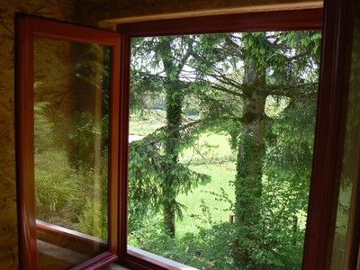
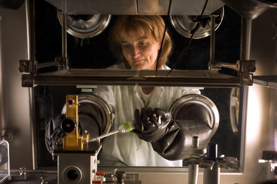

B) Le verre au plomb anti radiation

Il peut s’avérer que la définition d’un écran de protection contre les rayons gammas qui sont particulièrement énergétique conduise à une telle épaisseur de plomb que la manipulation de la source par l’opérateur soit compromise du fait du poids ou de l’encombrement, et aggrave le danger au lieu de le réduire.

Dans le cas de Marie Curie, une combinaison de plomb serait donc peu envisageable.
La contamination des lieux de travail est à l’origine de la contamination des personnes se trouvant autour et de son exposition par inhalation, ingestion ou contact (peau, œil, …) Toute contamination de surface par des substances radioactives sous forme de poussière ou par une substance volatile entraine la contamination de l’air des lieux de travail. Or toute contamination de surface ou volumique des lieux de travail doit être évitée ou réduite. Il s’agit alors de mettre en place des barrières de confinement des matières radioactives comme la boite à gant. Si ce confinement n’est pas total il s’agit alors de mettre en place des moyens d’assainissement des locaux de travail en aérant, ventilant bien la pièce.
La boite à gant est un moyen de radioprotection qui permet ce confinement et permet également d’éviter tout contact avec les produits manipulés. Le hublot en verre au plomb protège contre les rayons gamma.
L’exposition du corps humain aux rayons X entraîne un grand danger pour les tissus et les organes. Le verre au plomb anti-radiations offre la meilleure protection. Il est constitué d´un haut pourcentage d´oxyde de plomb absorbant les rayonnements.
Le plan de protection contre les rayonnements définit, en fonction de l’application, l´équivalence en plomb nécessaire et donc le type de verre à utiliser.

Un verre relativement fin peut atteindre la densité nécessaire pour absorber les radiations ioniques. Il a une résistance importante à la chaleur et ses verres sont utilisés chaque fois que l’on a besoin d’une protection transparente. Ils sont très utile dans les salles d’opérations, les laboratoires, les salles de radiographies, les salles de traitements et de soins, pour vitrer les fenêtres des postes d’observation, les portes de communication, les panneaux de protection, les caissons de manipulation et sont surtout utilisé dans les cabines de mammographie de nos jours.
Le verre plombé possède donc de nombreux avantages par rapport à d’autres matériaux de radioprotection comme le béton, l’acier ou le plomb, tout en étant aussi performant (l’oxyde de plomb représentant 65% du poids du vitrage).
Un exemple dans le domaine de la radiologie : le verre plombé peut être doté de bonnes propriétés acoustiques et permet ainsi de garder, en plus d’un contact visuel, un contact verbal avec le patient.